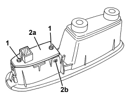

7010M10 REAR SIDE DOOR ELECTRICALLY OPERATED WINDOW SWITCH (ONE), LEFT OR RIGHT - R.R
- Path
- Procedures > 70 FITTINGS > 7010 PASSENGER COMPARTMENT REAR SIDE DOORS > 7010M REAR SIDE DOOR ELECTRIC WINDOWS > 7010M10 REAR SIDE DOOR ELECTRICALLY OPERATED WINDOW SWITCH (ONE), LEFT OR RIGHT - R.R
- Kind
- repair procedure (removal / refitting; the operation number is the code)
- Applies to
- all engines; all production periods
- Interactive page
- https://sloeber94.github.io/elrnDB/#/939011195
Applies to: all engines; all production periods
 Removing
Removing
 Refitting
RefittingOp. 7010E38 REAR SIDE DOOR INTERIOR HANDLE-R R
1. Undo the bolts.
2. Remove the switch (2a) releasing the retainers (2b).

Applies to: all engines; all production periods
Refitting
Removing- Check that the switch is not damaged and, if necessary, conduct an electrical test.
- Place the switch in position and attach the retainers.
- Tighten the bolts.